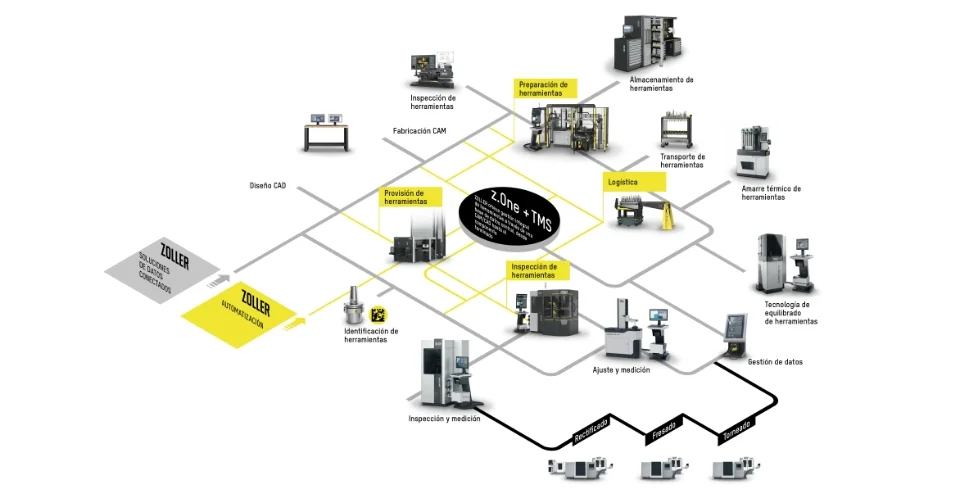
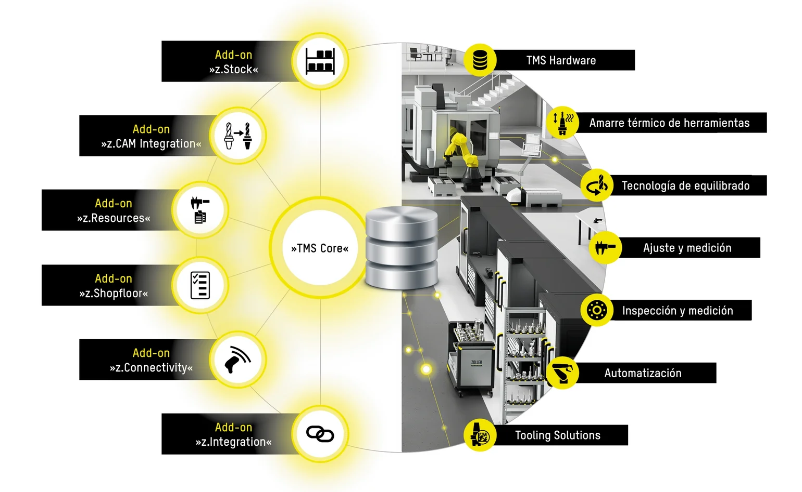
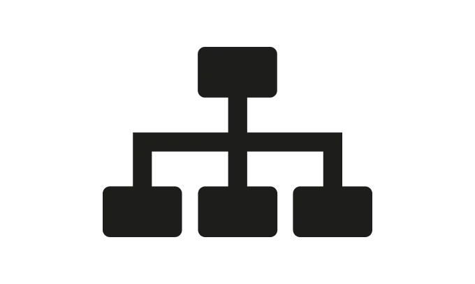
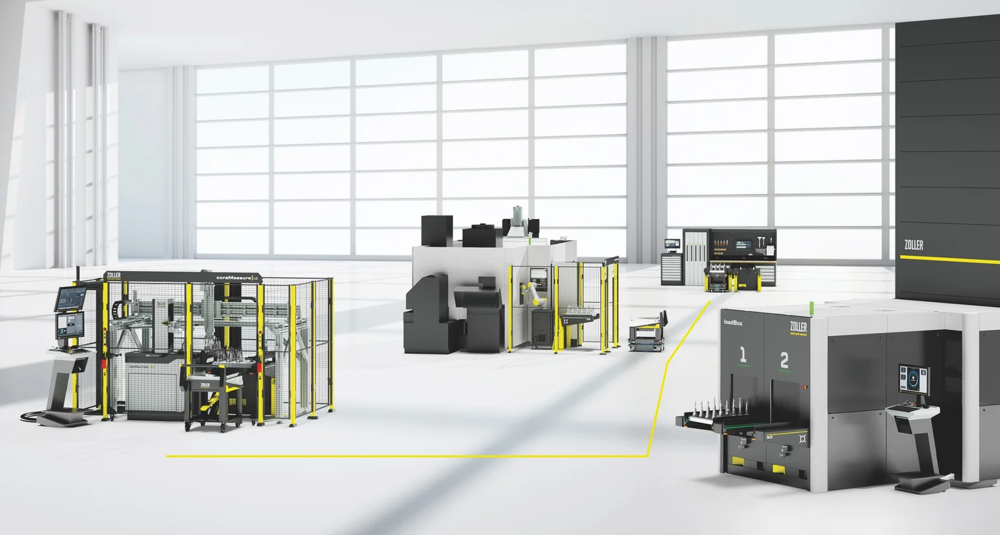

Inicie con una solución, ingrese a un sistema.
Nuestros clientes se benefician de soluciones integrales que hemos estado desarrollando durante décadas. El resultado: una eficiencia excelente.
Más información

Hoy en día, una gestión eficiente de las herramientas es la clave para contar con procesos estables, bajos costos y una producción transparente. Quien tiene bajo control los datos de las herramientas, los recursos operativos y los inventarios, evita los tiempos de búsqueda, los pedidos erróneos y las paradas de las máquinas, y aumenta la productividad desde el primer día. Es precisamente aquí donde entra en juego ZOLLER:
Comience con el potente »TMS Core« y amplíe su sistema paso a paso con seis complementos. El resultado: transparencia total, procesos seguros y una gestión de herramientas que crece de manera confiable junto con sus necesidades en su planta de producción. Dé el primer paso ahora y prepare su gestión de herramientas para el futuro. ZOLLER combina software y hardware para crear un sistema de gestión de fábrica inteligente que hace que los procesos de herramientas sean visiblemente más eficientes y medibles:
Comience con una solución – Ingrese al sistema

Administración integral de herramientas
Integración de sistemas independiente y flexible
Solución de software modular
01 Suministro de herramientas con garantía de proceso
02 Digitalización de los datos de las herramientas
03 Inventarios transparentes de herramientas
04 Trazabilidad de las herramientas
05 Procesos de fabricación estandarizados
06 Máxima transparencia de los datos de las herramientas
07 Acceso desde cualquier ubicación
08 Integración perfecta con el hardware de ZOLLER
09 Integración continua hasta la máquina
10 Aumento medible de la productividad
ZOLLER TMS tiene una estructura modular y se puede ampliar de manera específica, hasta llegar a una fábrica inteligente totalmente automatizada. El inicio es deliberadamente sencillo: comienza con exactamente las funciones que necesita hoy. De esta manera, la administración de sus herramientas mantiene la seguridad de su inversión a largo plazo, desde un inicio rápido hasta la etapa final completa con procesos automatizados. Comience fácilmente. Crezca de manera modular. Automatice con visión de futuro.
Las licencias flotantes de ZOLLER ofrecen la máxima flexibilidad en el uso del sistema de gestión de herramientas. Las licencias están disponibles de manera centralizada en la red, se asignan automáticamente según sea necesario y se liberan de inmediato al cerrar el TMS. Este modelo de licencia es ideal para entornos de fabricación con requisitos variables y garantiza un acceso 100 % escalable a toda la información.

ZOLLER TMS se instala de manera centralizada en el servidor de la empresa y proporciona información sobre herramientas y fabricación en todas las sedes y en cualquier dispositivo, según el conjunto de funciones disponible. El acceso se realiza a través de un navegador desde dispositivos móviles, mientras que las actualizaciones centralizadas reducen de manera significativa y duradera el esfuerzo de mantenimiento y administración tanto para los usuarios como para el departamento de TI.
ZOLLER TMS es la solución central para una gestión eficiente del taller de herramientas y garantiza una transparencia constante a lo largo de todo el ciclo de vida de las herramientas. Desde la planificación, pasando por la puesta a disposición, hasta el reacondicionamiento, todas las herramientas, componentes y datos se administran en una base de datos central.
El resultado: ZOLLER TMS se convierte en el centro de operaciones digital y controlado de la producción. Se reducen los tiempos de búsqueda, se optimizan los inventarios y se estandarizan los procesos. Desde el sistema CAM, pasando por el almacén, hasta el ajuste y la medición de herramientas, ZOLLER TMS crea un flujo de trabajo continuo, lo que garantiza la máxima seguridad de los procesos, transparencia de costos y productividad en el taller de herramientas.

El sistema de gestión de herramientas de ZOLLER proporciona datos de herramientas desde el inicio hasta el final del proceso.
Con la ayuda de los Smart Cabinets de ZOLLER, las herramientas, los componentes, los accesorios y los conjuntos completos de herramientas se registran digitalmente y se pueden localizar.
Los Smart Cabinets garantizan la disponibilidad automática de las herramientas y reducen los tiempos de búsqueda; la visibilidad de los inventarios garantiza una mayor eficiencia y seguridad de los procesos en la producción.
ZOLLER »powerShrink« destaca por su sistema de inducción adaptado a los mandriles de contracción, un potente sistema de enfriamiento y un manejo intuitivo gracias al concepto ZOLLER actbyLight controlado por LED.
Para un uso eficiente y orientado al rendimiento de sus máquinas CNC, necesita herramientas equilibradas con precisión. Con el »toolBalancer« de ZOLLER, puede equilibrar sus herramientas con una precisión inigualable y disfrutar de un producto duradero, sostenible y con un diseño ergonómico.
Los equipos de
ajuste y medición de ZOLLER ofrecen precisión en el rango de los micrones. Su manejo intuitivo garantiza que se obtengan resultados de medición reproducibles en todo momento.
Para tareas de transporte entre el almacén de herramientas, la preparación de herramientas y la máquina CNC.
El sistema de gestión de herramientas de ZOLLER proporciona datos de herramientas desde el inicio hasta el final del proceso.
Con la ayuda de los Smart Cabinets de ZOLLER, las herramientas, los componentes, los accesorios y los conjuntos completos de herramientas se registran digitalmente y se pueden localizar.
Los Smart Cabinets garantizan la disponibilidad automática de las herramientas y reducen los tiempos de búsqueda; la visibilidad de los inventarios garantiza una mayor eficiencia y seguridad de los procesos en la producción.
ZOLLER »powerShrink« destaca por su sistema de inducción adaptado a los mandriles de contracción, un potente sistema de enfriamiento y un manejo intuitivo gracias al concepto ZOLLER actbyLight controlado por LED.
Para un uso eficiente y orientado al rendimiento de sus máquinas CNC, necesita herramientas equilibradas con precisión. Con el »toolBalancer« de ZOLLER, puede equilibrar sus herramientas con una precisión inigualable y disfrutar de un producto duradero, sostenible y con un diseño ergonómico.
Los equipos de
ajuste y medición de ZOLLER ofrecen precisión en el rango de los micrones. Su manejo intuitivo garantiza que se obtengan resultados de medición reproducibles en todo momento.
Para tareas de transporte entre el almacén de herramientas, la preparación de herramientas y la máquina CNC.
»coraLogistic« transporta de manera automatizada las herramientas verificadas en el equipo de ajuste y medición de ZOLLER. A través de ZOLLER »zidCode 4.0,« los datos correspondientes a las herramientas se transmiten directamente y sin errores a la máquina CNC mediante un escaneo. Cada herramienta está asignada de manera única a una máquina, y los datos se introducen inmediatamente en el control. De esta manera, en la producción se cuenta en todo momento con datos de herramientas correctos, actualizados y consistentes —de manera rápida, segura y sin necesidad de ingresar datos manualmente—.
El resultado: los datos de las herramientas se transmiten directamente a la máquina CNC de manera sencilla, confiable y segura mediante »zidCode 4.0« o »zidCode, ya sea« a través de RFID o mediante posprocesadores.
Para tareas de transporte entre el almacén de herramientas, la preparación de herramientas y la máquina CNC.
»zidCode« garantiza la identificación única de las herramientas y una transmisión de datos segura y sin errores mediante un código QR.
Con ZOLLER »zidCode 4.0«, puedes transferir todos los datos digitales de las herramientas al control CNC, sin errores de digitación ni de transmisión.
Los
posprocesadores preparan los datos de las herramientas para que sean compatibles con el control CNC y permiten una transferencia de datos automática y sin errores.
La transferencia de datos mediante tecnología RFID permite enviar los datos de las herramientas sin contacto directamente a la máquina CNC.
Para tareas de transporte entre el almacén de herramientas, la preparación de herramientas y la máquina CNC.
»zidCode« garantiza la identificación única de las herramientas y una transmisión de datos segura y sin errores mediante un código QR.
Con ZOLLER »zidCode 4.0«, puedes transferir todos los datos digitales de las herramientas al control CNC, sin errores de digitación ni de transmisión.
Los
posprocesadores preparan los datos de las herramientas para que sean compatibles con el control CNC y permiten una transferencia de datos automática y sin errores.
La transferencia de datos mediante tecnología RFID permite enviar los datos de las herramientas sin contacto directamente a la máquina CNC.
Con ZOLLER TMS como base de datos central, comienza la automatización integral del proceso de herramientas. En este contexto, TMS controla »coraLogistic«, la solución logística inteligente, que automatiza procesos como la identificación de herramientas, la medición de herramientas, el almacenamiento de herramientas y el cambio automatizado de herramientas en la máquina. ZOLLER TMS integra »loadBox«, »coraMeasure LG« y »coraMachineLoad« en un proceso cerrado e integral, desde la identificación hasta el cargado automatizado de la máquina. Todos los datos de las herramientas se administran en TMS y se transfieren a la máquina de manera segura y confiable.
El resultado: ZOLLER TMS controla todo el proceso de herramientas y sienta las bases para una automatización preparada para el futuro, 24 horas al día, 7 días a la semana, con el más alto nivel de calidad.

Logística
automatizada de herramientas para un proceso de fabricación eficiente y sin contratiempos.
»coraMachineLoad« carga de manera automatizada las máquinas herramienta y garantiza un abastecimiento confiable y eficiente para la producción.
Preparación
automatizada de herramientas para una producción eficiente con las herramientas necesarias en el momento adecuado.
La medición automatizada de herramientas con »coraMeasure LG« para obtener resultados de medición precisos y la máxima eficiencia en los procesos.
Logística
automatizada de herramientas para un proceso de fabricación eficiente y sin contratiempos.
»coraMachineLoad« carga de manera automatizada las máquinas herramienta y garantiza un abastecimiento confiable y eficiente para la producción.
Preparación
automatizada de herramientas para una producción eficiente con las herramientas necesarias en el momento adecuado.
La medición automatizada de herramientas con »coraMeasure LG« para obtener resultados de medición precisos y la máxima eficiencia en los procesos.

Nuestros clientes se benefician de soluciones integrales que hemos estado desarrollando durante décadas. El resultado: una eficiencia excelente.

Intercambio personalizado sobre sus objetivos y nuestras ideas al respecto. El asesoramiento en línea de ZOLLER directamente desde la Smart Factory. Concierte ahora su cita.